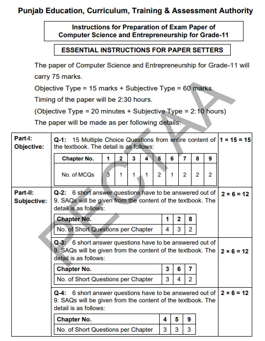
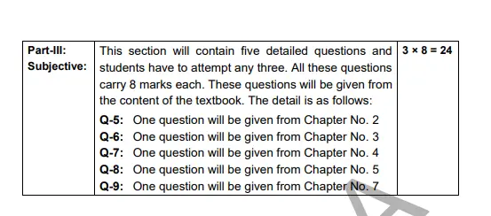

Unit 1: Introduction to Software Development
Short Questions
Most Important- What is software development and framework in software development?
- Difference between functional and non-functional requirements.
- Difference between functional testing and compatibility testing.
- Elavorate different types of design pattern.
- What is debugging, error and testing?
- From exercise 1,2, and 7.
- Difference between translators and debuggers.
- Difference between IDEs and Language Editors.
- What is meant by acceptance testing?
- What is SDLC and its life cycle[Only name]?
- What is waterfall and agile methodology with its steps.[Steps only name].
- What is meant by test driven development?
- What is meant by pair programming?
- Write benefits and limitations of agile methodology.
- What is meant by source code repository?
- What is meant by deployment?
- What is meant by requirement gathering?
- What is meant by unit testing?
Long Questions
Note: Chapter 1 is not in Scheme. So, you can skip long questions from this chapter.Unit 2: Python Programming
Short Questions
Most Important- What are python comments?
- What is meant by variale? Also write rules for naming variable.
- What is operator precendence in python?
- What is assignment operator?
- Difference between if and if-else statement.
- What is if else if statement?
- What is while and for loop?
- What are default parameters?
- Difference between list and tuple.
- What is main function in python?
- From exercise 4, 6, and 7 must to do.
- What is python? OR What is Python Programming? OR What is meant by high level python programming?
- What are comparison and logical operators in python?
- What is meant by looping construct?
- From exercise 2 and 3.
- What is meant by package structure?
Long Questions
- Do long questions 4, 5, and 6.
- Explain built in data structure. [90% important].
- Explain control structure. [80% important].
Unit 3: Algorithms and Problem Solving
Short Questions
Most Important- Difference between solvable and unsolvable problem.
- What is meant by Computational problem?
- Difference between tracable and intracable problem.
- What is time complexity?
- What is Bog O Notation?
- Difference between O(1) and O(n).
- Difference between quadratic time and logarithimic time.
- What is space complexity?
- What is Greedy Algorithm?
- What is meant by Dynamic Programming?
- What is Backtracking?
- Difference between linear search and binary seach.
- Difference between bubble sort and selection sort.
- Difference between DFS and BFS.
- Exercise question 4, 5, 8.
- Exercise question 1, 2, 7.
- What is generate and test method?
- What is meant by divide and conquer?
Long Questions
- Do long questions 4, 5 from exercise but 5 is more important.
- Algorithm design Techniques. [90% important].
- Explain commonly used Algorithms. [95% important].
Unit 4: Computational structure
Short Questions
Most Important- What is list? Also write its properties.
- What is Stack? Also write its operation.
- What is Queue? Also write its operation.
- Difference between tree and balanced tree.
- Difference between nodes and edges.
- What is meant by balanced tree?
- What is graph?
- Write down the properties of graph. [Only name but learn degree with full definition].
- What is directed and undirected graph?
- What is meant by weighted graph?
- Exercise question 1 and 3.
- Exercise question 2.
Long Questions
- Do long questions 1, 2, 3, 4, 5 from exercise but 1, 4 and 5 are more important.
Unit 5: Data Analytics
Short Questions
Most Important- Finding mean, median, mode, S.D and variance. [Definiton and method to solve question]. The above question is only 1 percent important. Only 1 question can be asked. So, u can ignore if you want to ignore.
- What is probability?
- Write the methods of data collection. [Only Names].
- What is meant by data preparation?
- What is data cleaning?
- What is data transformation?
- Write the methods to handle missing data.
- Difference between imputation and flagging.
- What is meant by data visualization?
- What is histogram?
- Exercise question 3 and 4 Must to do.
- What is bar chart?
- What is line graph?
- Write down the tools for data visualization. [Only Names].
Long Questions
- Do long questions 3, 4, 5 from exercise but 1 and 2 are more important.
Unit 6: Emerging Technology
Short Questions
Most Important- What is AI?
- What is Cloud Computing?
- What is Blockchain?
- What is IOT?
- Difference between AR and VR.
- What is Quantum Computing?
- What is Virtualization?
- What is meant by data visualization?
- Difference between public and private cloud.
- Difference between hybrid and multi cloud.
- What is edge computing?
- What are serverless architectures?
- Exercise question 2,3,5,6,7 Must to do.
- What is Emerging Technology?
- What is Biotechnology?
- Types of cloud services.[Only Names].
- Difference between PaaS and SaaS.
- What is meant by data security?
- What is histogram?
Long Questions
Note: Chapter 6 is not in Scheme. So, you can skip long questions from this chapter.
Unit 7: Legal and ethical aspect of computing system
Short Questions
Most Important- What are intellectual property rights?
- What is meant by termination of services?
- What is meant by legal ramifications?
- What is meant by ethical considerations?
- What is meant by personal rights?
- What is meant by spam filters?
- What is meant by digital citizenship?
- What is responsible digital behavior?
- What is meant by human machine collaboration?
- From exercise 1,2,4,5 must to do.
Long Questions
- Types of security threat. [Must do for both long and short]. [80% important].
- Secuirty threats prevention Techniques. [90% important].
Unit 8: Online Reseach and Digital Literacy
Short Questions
Most Important- What is online reseach? Also write its importance.
- Types of online reseach. [Only Names].
- What is digital literacy?
- What are reseach ethics? Also write its importance.
- Key principles of research ethics. [Only Names but must learn the definition of point 1 and 3].
- What is patent?
- What is trademark and copyright?
- What is meant by trade secrets?
- Ways to protect intellectual property.
- Exercise question 1,2, and 3 Must to do.
Long Questions
Note: Chapter 8 is not in Scheme. So, you can skip long questions from this chapter.
Unit 9: Entrepreneurship in Digital Age
Short Questions
Most Important- What is design thinking?
- Difference between ideate and prototype.
- Difference between qualitative and quantitative research.
- Difference between collaboration and Iteration.
- Difference between Innovation and Creativity.
- Exercise question 1,2, 3, 4, 5, 6, and 8 all are very important.
Short Questions
Least Important- What is Business Plan?
- What is meant by focus group?
- Difference between predictive and competitor analysis.
- What is Business Pitch? Also write the importance of pitching?
Long Questions
Note: Chapter 9 is not in Scheme. So, you can skip long questions from this chapter.
FAQs
Q1: Are these questions enough for 100% marks?
Yes, these questions cover all important topics from Unit 1 to Unit 5 and are exam-focused.
Q2: Can I use this as a revision guide?
Absolutely, it is structured for short and long questions and is perfect for last-minute revision.
Q3: Are answers included?
No, this page contains questions only. You can answer them in your notebook or class notes.
Q4: Is this suitable for beginners?
Yes, the questions start from basic programming concepts and gradually move to advanced topics.
Q5: Can I download this page?
Yes, you can save this HTML file and access it offline anytime.